0. 課程資訊與教材
| 課程名稱 | EP45_「Google AI Studio 偷藏了這些 Agent！」 |
|---|---|
| 頻道 | 生成式 AI 應用電台・晨學講堂 |
| 直播日期 | 2026/07/10（五）晚間；錄影全長 37:08 |
| 教學結構 | 主要教學 00:44–27:15；問答與後續課程預告 27:15–37:08 |
| 一句話先懂 | Google AI Studio 不只是「挑一個 Gemini 模型來聊天」的 Playground——它把可直接試跑的 Agent 範本、工具開關、資料來源、網路規則與雲端執行環境放進同一個介面。老師進一步示範：不想一直付 API token，就把官方 Agent 的 sources、rules 交給 Codex 或 Antigravity 學，再打造自己的版本。 |
| 示範案例 | 全程以「颱風」當範例：颱風 NPC 語音 → 颱風氣象 Podcast → 颱風寓教娛樂防災遊戲 |
🎬 錄影回放（可直接播放）
1. 一頁看懂全課程
這堂課的動線很清楚：先教一個貫穿所有工具的小技巧（語音聽寫），再帶你認識 Google AI Studio 的兩個世界——Models（模型）與Agents（代理）；然後打開 Agents 展示間逐一示範，最後用「多 Agent 團隊做一個颱風遊戲」收尾，並給出「付費試跑 vs 學官方自己重做」的取捨。
2. 逐幀時間軸（37 分鐘全程）
每一列都是親眼逐幀判讀的實錄；點各章節看該段詳細筆記與截圖。
| 時間 | 畫面／工具 | 發生了什麼 |
|---|---|---|
| 00:44 | Codex 桌面版 | 先教一個貫穿全課的小技巧——Codex 按住說話（語音聽寫）：設定聽寫工具、選麥克風與快捷鍵（示範 Ctrl+A）。 |
| 03:30 | Word / 系統 | 強調「游標在哪，聽寫就寫到哪」——連 Word 打字也能用；簡繁可在 Word 校閱「繁簡轉換」修正。 |
| 06:36 | Google AI Studio | 進入今天主軸；IO 大會後改版、Logo 換新。回顧 Playground 的 Models：對話、生圖、影像、TTS、即時互動。 |
| 07:35 | AI Studio · TTS | TTS 情境範本：除了單人／多人，多了「助理、遊戲 NPC、主持人、廣告」等情境；以「颱風要登陸」示範 NPC 聲音、換聲線與語速，可下載音訊。 |
| 10:43 | AI Studio · Agents | 切到 Build with Agents：官方做好的 Agent 展示間。 |
| 11:08 | Antigravity | 談 Agent 四大工具（Claude Code／Codex／OpenCode／Google Antigravity），示範 Antigravity Preview 在雲端直接使用、可多角色子代理協作、需裝 skill 中文化。 |
| 12:34 | Run settings | 工具開關＋成本：Code execution／Google Search Grounding／URL context／Filesystem／Sources／Network rules；提醒所有 Agent 都要 API key、會花 token。 |
| 14:00 | AI Talk Radio | 下 prompt：一分鐘、中文、颱風最新動態、兩位主持人＋配樂的 Podcast。 |
| 15:16 | sources / rules | 示範省 token 的路：把官方 Agent 的 18 sources／9 network rules 連結交給自己的 Antigravity 學，先學一次再自建。 |
| 17:41 | Podcast 產出 | Radio Agent 完成：含開場、主持人口播、音效、Lyria 3 配樂、Nano Banana 封面、可下載 MP3。 |
| 20:23 | Agent 清單 | 快速帶過其他 Agent（Customer Support／Data Analyst／Document Processor／Repo Maintainer）與適用情境。 |
| 21:05 | 多 Agent 團隊 | 用 Antigravity 的「團隊合作」斜線指令，把「做颱風互動遊戲」分派給音效／動畫／闖關子 Agent。 |
| 23:19 | 颱風遊戲成果 | 展示上一堂做好的「颱風指揮官」防災遊戲：背景音效、突發事件、選擇影響健康值。 |
| 25:04 | 選擇路徑 | 付費試跑 vs 學官方自建的取捨；Customer Support 對動態網站（如 Facebook）爬取有限制。 |
| 27:15 | 問答／預告 | 年中共學課程預告、Codex 手機版、寵物、抽獎；下週因出國停播一次會補課。 |
| 36:01 | CLI Teamwork | 補充：CLI 介面的 teamwork 要主動用指令叫出，不像網頁版直接有按鈕。 |
3. 輸入加速：Codex 語音聽寫
開場老師先講一個「會貫穿今天所有工具」的小功能——不管是聊天機器人還是 AI Agent，都一定要下 Prompt；那就把「打字」換成「說話」。
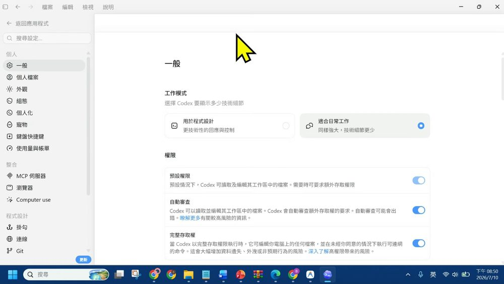
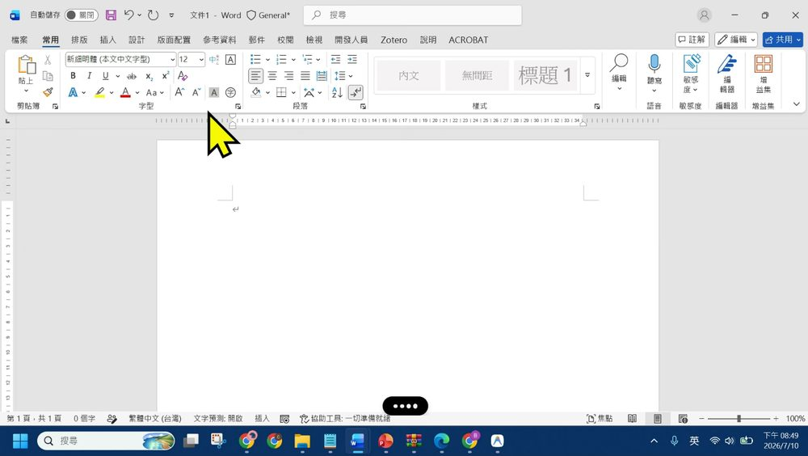
- 設定路徑：Codex → 左下角你的頭像 → Setting → 一般往下滑 → 聽寫功能，選麥克風＋快捷鍵。
- 用法：在任何有文字游標的地方按住快捷鍵說話，放開後它「一字不漏」把語音轉成文字落在該欄位。老師原話：「你只要以後按 Ctrl A，他就可以直接幫我做聽寫的動作……而且他是在游標的位置。」
- 簡繁：辨識偶爾出簡體，可在 Codex 設定語言為繁中；在 Word 內用校閱 → 繁簡轉換修正，不用重打。
- 定位：這是輸入輔助（加快下 Prompt），不等於 Agent 自動完成任務；送出前仍要檢查專有名詞、數字與否定詞。
4. Google AI Studio：模型 vs Agent
老師把 AI Studio 比喻成一座 AI 實驗室：Models 是一台台不同用途的機器；Agents 則是已經把機器、工具與操作流程組裝好的工作站。
4.1 模型總覽
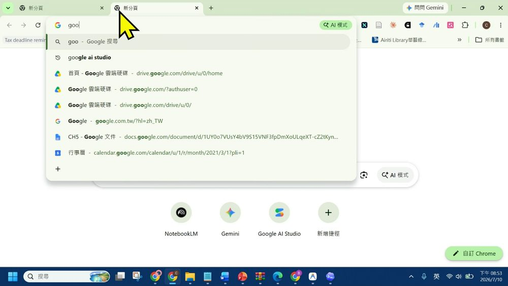
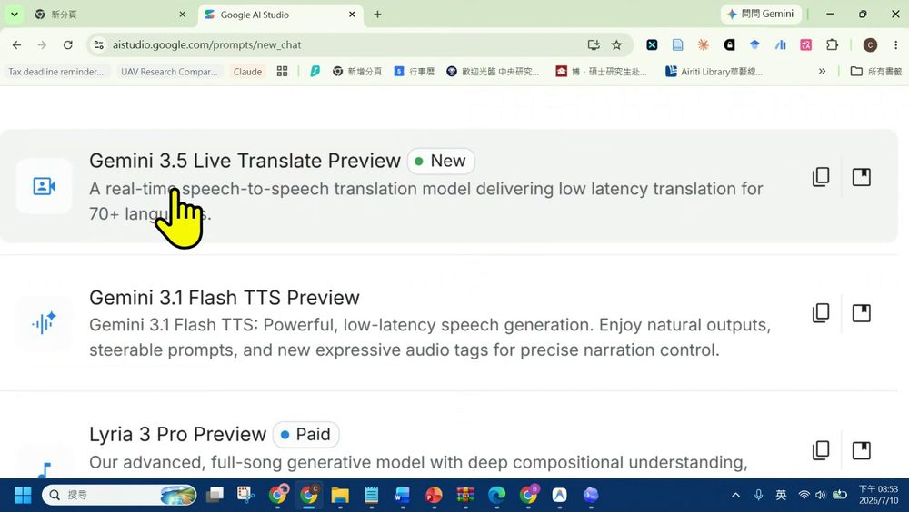
| 概念 | 定義 |
|---|---|
| Model（模型） | 接受輸入、產生輸出的基礎 AI 能力——回答一次。 |
| Agent（代理人） | 以模型為核心，另配指令、工具、來源、權限、執行環境與步驟——會規劃、選工具、執行並組合結果。 |
4.2 TTS 情境範本：不只是「把文字唸出來」
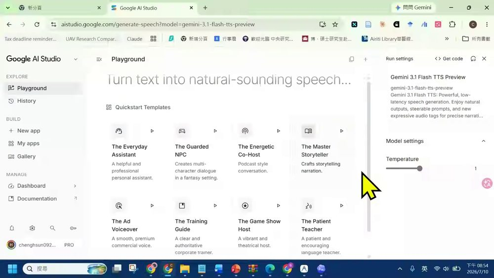
- 以前只分 single／多人；現在多了按用途整理的情境：助理、遊戲 NPC、主持人、說故事／廣告。老師以「遊戲 NPC」示範，輸入「今天颱風準備要登陸」再換聲線與語速。
- 可調：說話內容、角色情境、聲音（speaker）、英文口音／腔調、語速、單人或多人；生成後可播放並下載音訊。
- 這仍是單項模型能力；下一章的 AI Talk Radio 才會把 TTS＋主持人＋配樂＋封面串成完整節目。
5. 官方 Agent 展示間
切到 Agents 分頁，AI Studio 偷藏的一整排官方 Agent 就露出來了。老師先總覽，再挑 Antigravity 與 AI Talk Radio 深入示範，並教一招「省 token 的自建路」。
5.1 Build with Agents：官方做好的 Agent
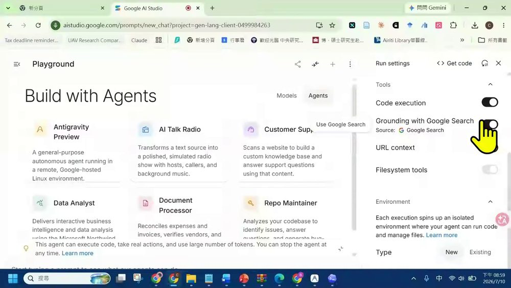
| Agent | 用途（畫面說明） |
|---|---|
| Antigravity Preview | 在 Google 託管的遠端 Linux 環境執行的一般用途自主 Agent |
| AI Talk Radio | 把文字來源轉成含主持人、來賓／來電者與背景音樂的模擬廣播 |
| Customer Support | 掃描網站建立客服知識庫並回答問題 |
| Data Analyst | 資料分析與互動式商業洞察 |
| Document Processor | 文件、費用／發票等處理工作 |
| Repo Maintainer | 分析程式碼庫、找問題、回答與協助維護 |
選 Agent 別先看哪張卡最炫，先問：①輸入是文字／網站／文件／資料／程式碼？ ②產物是答案／報告／知識庫／音訊／可執行成品？ ③需要哪些工具與外部資料？ ④來源是靜態頁還是動態網站？
5.2 Antigravity Preview：雲端直接用的自主 Agent
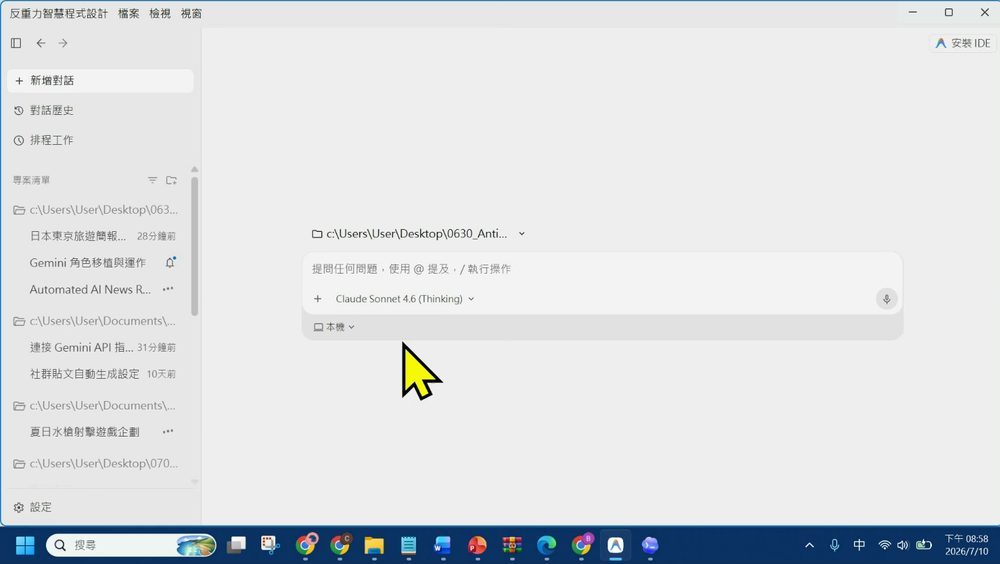
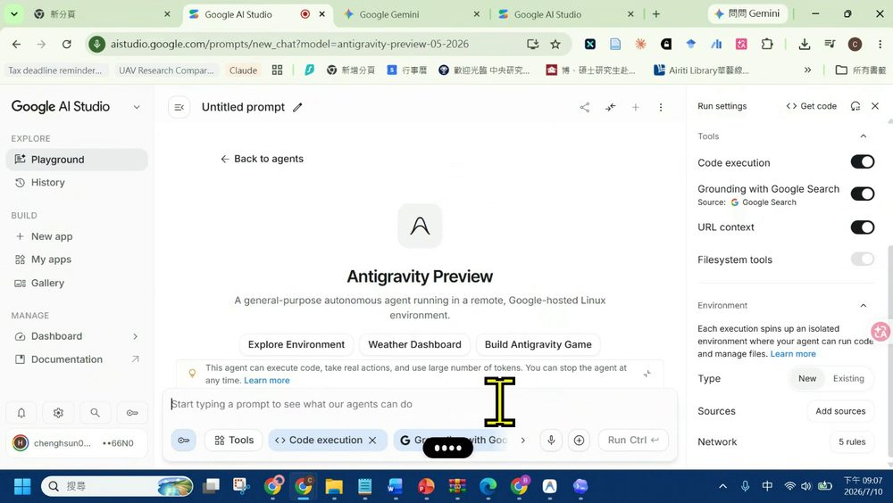
- Agent 四大工具，老師點名：Claude Code、GPT 的 Codex、開源 OpenCode、Google 的 Antigravity。
- Antigravity 最大特色：可在雲端直接用（不必只靠本機）、模型可選、支援多角色子代理協作。
- Preview＝功能仍會變動；雲端 Agent 有自己的環境、來源與網路權限，不等於能自由讀取你整台電腦。
5.3 工具開關與成本：Agent 的「手、眼睛與通行證」
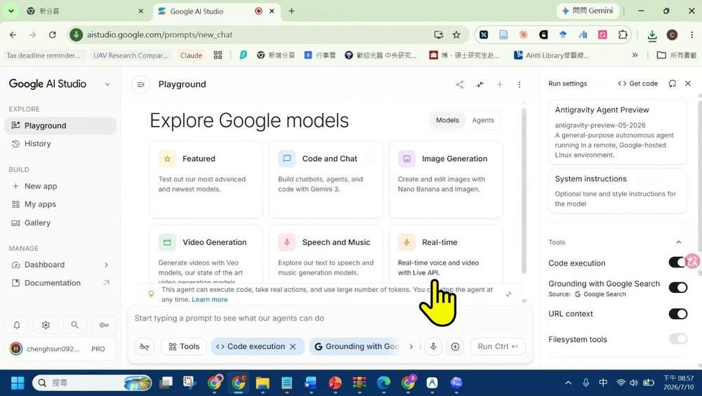
| 工具 | 作用 |
|---|---|
| Code execution | 讓 Agent 在隔離環境執行程式 |
| Grounding with Google Search | 透過 Google Search 查資料、作為回答依據 |
| URL context | 讀取指定網址內容作為上下文 |
| Filesystem tools | 管理隔離環境中的檔案（依執行模式而定） |
| Sources | Agent 已連結的資料來源／規格 |
| Network rules | 哪些網域／網路請求可被允許 |
5.4 AI Talk Radio：把文字變成完整 Podcast
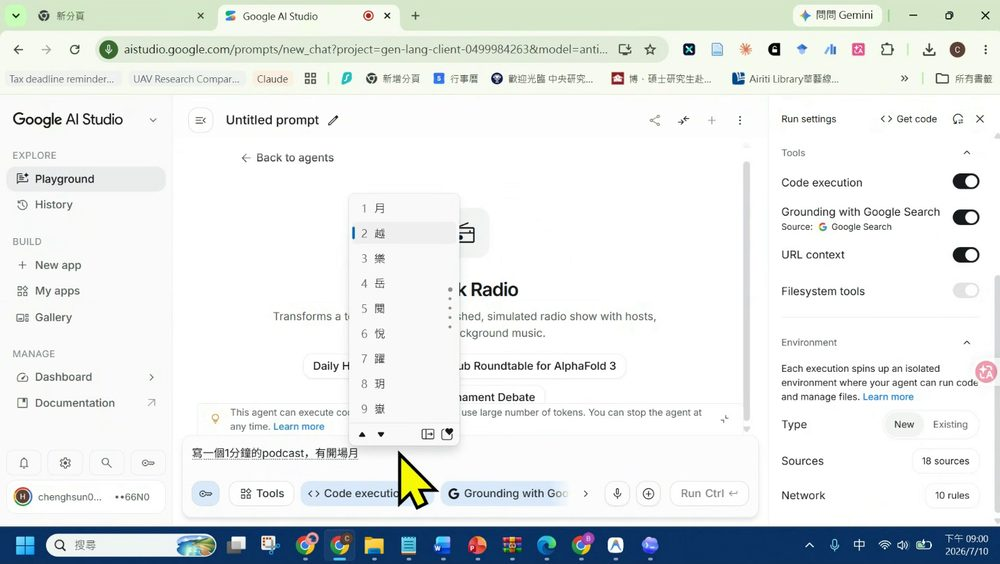
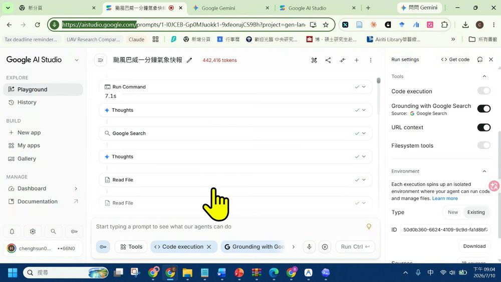
- 老師的任務：一段約一分鐘、中文、颱風動態的廣播，含開場、兩位主持人、背景配樂、可下載完整音訊。
- 產出不只語音：節目結構、口播、音效／配樂、封面、MP3。相關模型——TTS 負責人聲、Lyria 3 負責配樂、Nano Banana 負責封面，Agent 負責安排順序與整合。
- 老師比較：「他會比 NotebookLM 做出來的再更完整——他有背景音樂，用 Lyria 3 做的配樂。」
- 那個 442,416 tokens 正是「成本」的具體證據——完整 Podcast 很炫，但也很吃 token。
5.5 省 token 的路：讓自己的 Agent 學官方設計
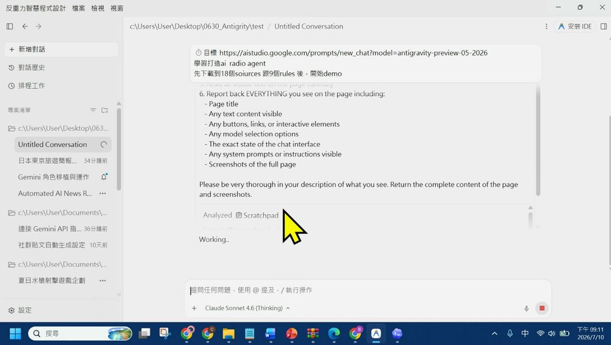
- 先給目標：例如「學習並打造 AI Talk Radio Agent」。
- 給來源：貼上官方 Agent 連結。
- 指定學習範圍：讀取 18 個 sources 與 9 個 network rules。
- 先回報理解：要它整理架構、工具、限制與流程。老師原話：「你學完你要先學一次，然後我看你好不好，好了，你再變成你的固定的專欄。」
- 再動手實作：確認理解正確後才建立自己的版本。
6. 進階：多 Agent 與實作
把 Antigravity 放到雲端後，它「有手有腳」——這一章用「多 Agent 團隊做一個颱風遊戲」示範，並收在「怎麼選、有什麼限制」。
6.1 多 Agent 團隊：把大任務拆給專門角色
老師用 Antigravity 的斜線指令「團隊合作」，把一個任務切得更細、分派給不同子 Agent。原話任務：
- Multi-agent collaboration：主 Agent 接收總目標 → 拆分子任務 → 分派給多個子 Agent → 最後整合與驗證。
- 不是越多越好：子 Agent 過多會增加溝通、重工與成本。適合拆分的條件是工作能明確分界、可獨立驗收，且最後有整合角色。
6.2 颱風寓教娛樂遊戲：把知識藏進選擇與後果
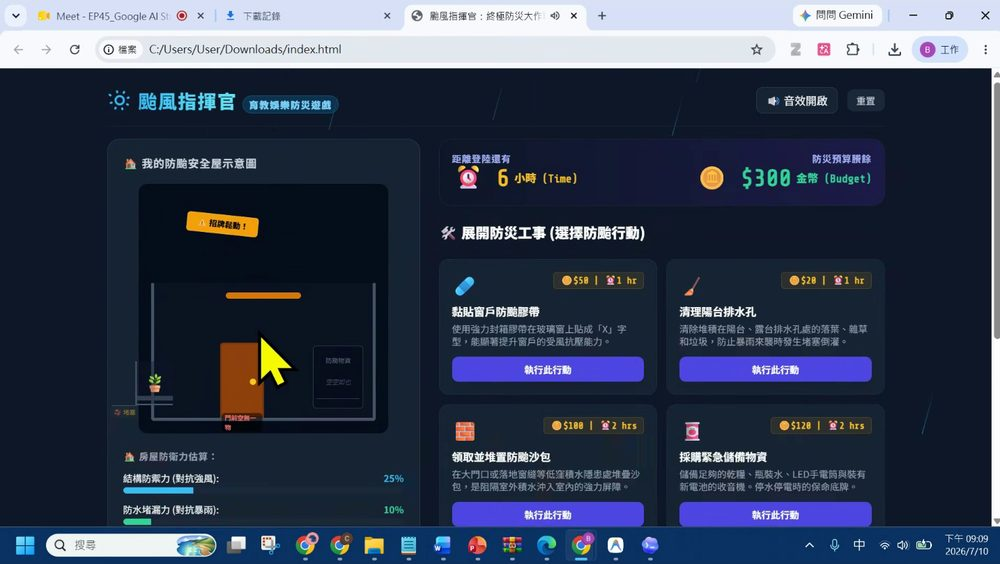
- 玩法：以突發事件推進（海水倒灌、玻璃破裂），玩家選擇應對方式，選擇會影響健康／精神等狀態，系統說明錯誤選擇的風險與較好做法。
- 老師比較：「他會比你原本用 Gemini 的 Canvas 功能做出來的，品質再更好一點——畢竟他長出手跟腳了，能拿語音、音樂、動畫這些模型。」
- 驗收清單：每個事件有正確防災依據？錯誤選項有說明原因？音效／動畫不干擾閱讀？手機可操作？HTML 能離線開或直接部署？
6.3 選擇路徑與限制
| 路徑 | 適合 |
|---|---|
| A｜直接用官方 Agent | 要快速驗證、願提供 API key、可接受 token 成本 |
| B｜讓自己的 Agent 學官方設計 | 想控制流程、重用既有 Codex／Antigravity 配額、願花時間理解 sources／rules／工具限制 |
- 對應建議：報告與資料整理→文件／資料 Agent；程式碼維護→Repo Maintainer；寓教娛樂遊戲→具程式／音效／動畫／多 Agent 能力的流程；對 Agent 還不熟→先從 Antigravity Preview 試作。
- Customer Support 的限制（26:20）：偏靜態網頁才適合爬取；Facebook 等動態、需登入的內容爬不到，Google 評論還可以，但動態網站很難。建知識庫前先驗證「來源能否存取、是否穩定、是否允許使用」。
- CLI Teamwork（36:01）：若用 CLI 介面，teamwork／團隊功能要主動用指令叫出，不像網頁版直接有按鈕。
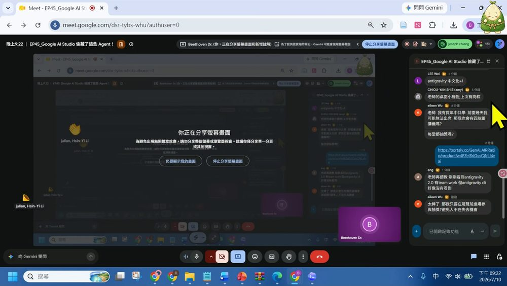
7. 專有名詞卡
| 名詞 | 白話 | 正式定義 |
|---|---|---|
| Prompt | 交代 AI 要做什麼 | 提供給模型或 Agent 的文字／多模態輸入與約束 |
| TTS | 把文字唸成聲音 | Text-to-Speech，文字轉語音技術 |
| Agent | 能自己分步完成任務的 AI | 結合模型、指令、工具、來源與執行迴圈的系統 |
| 子 Agent | 專門負責一小塊的助手 | 由主 Agent 分派獨立子任務的代理執行單元 |
| Grounding | 查資料後再回答 | 將輸出連結到外部可檢索來源／證據的機制 |
| URL context | 把指定網頁交給 AI 讀 | 將 URL 可取得內容注入模型上下文的工具 |
| Code execution | 讓 AI 實際跑程式 | 在受控／隔離環境執行程式碼的能力 |
| Sources | Agent 的參考材料 | Agent 執行時可讀取的來源／規格／知識資源 |
| Network rules | Agent 的網路白名單 | 限制執行環境可存取網域與請求的規則 |
| API key／Token | 服務鑰匙／計費單位 | 驗證呼叫者與計量用量的憑證；模型切分文字後的計算單位 |
| Lyria 3 / Nano Banana | 配樂模型／封面生圖模型 | 本集 Radio Agent 分別用於背景音樂與節目封面 |
8. 課後自我檢核（照本集實作）
都對應本集真的示範過的動作。可到互動技能地圖逐項打勾。
| 主題 | 你應該做得到… |
|---|---|
| ⌨️ 輸入 | ① 設定 Codex 聽寫工具與快捷鍵 ② 在 Word 等任何有游標處用語音輸入 ③ 知道要人工檢查專有名詞 |
| 🧪 AI Studio | ① 說出 Models 與 Agents 的差異 ② 認得 Live Translate／TTS／Lyria 3 ③ 用 TTS 情境範本（NPC）設定聲音與語速並下載音訊 |
| 🤖 官方 Agent | ① 說出 Build with Agents 的六種範本與用途 ② 解釋 Code execution／Grounding／URL context／Filesystem 的作用 ③ 知道每個 Agent 都要 API key、會花 token ④ 用 AI Talk Radio 生成含配樂、封面的 Podcast |
| 🧩 進階 | ① 把官方 Agent 的 18 sources／9 rules 交給自己的 Agent「先學再自建」 ② 用多 Agent 團隊把遊戲拆給音效／動畫／闖關子 Agent ③ 判斷 Customer Support 對動態網站的限制 ④ 選對付費 vs 自建路徑 |
9. 資料來源與製作說明
- 原始教材：EP45「Google AI Studio 偷藏了這些 Agent！」課堂錄影（37:08，未附獨立簡報檔，圖片來源為錄影操作畫面）。
- 逐幀製作方式：下載完整錄影 → ffmpeg 依節點時間碼抽出畫面 → 親眼逐幀判讀每個操作畫面（Codex／AI Studio／Antigravity／AI Talk Radio／颱風遊戲）→ 裁切成 14 張真實截圖嵌入本頁；並對照課堂逐字稿，引號內文字取自逐字稿或畫面可辨識內容。
- 誠實聲明：本頁內容以錄影實際發生的順序與畫面為準。語音辨識偶有錯字（如工具名稱、颱風名「巴威」等），已依畫面校正後採用；畫面上 AI Talk Radio 顯示的 network rules 於不同時點分別出現 9／10，本頁以老師強調的 18 sources／9 rules 為準並在截圖如實標註當下數字。
- 介面參考：互動技能地圖頁沿用本站 EP44 的卡片式多層導覽與遊戲化進度設計。